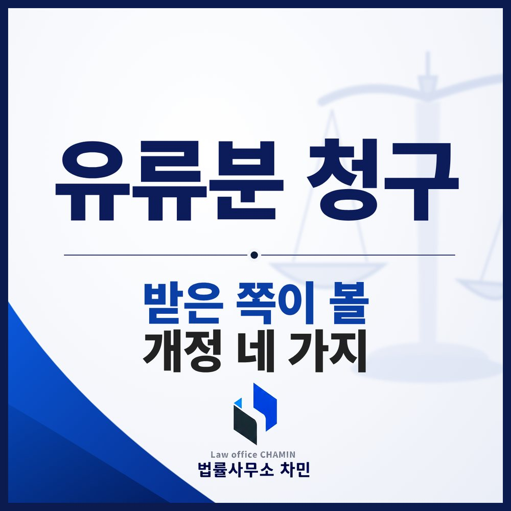

핵심 답변
2026년 개정 민법으로 특별히 부양하거나 재산 형성에 기여한 대가로 받은 증여는 그 기여에 상응하는 범위에서 유류분 계산에서 빠질 수 있게 되었습니다. 반환도 원칙적으로 지분이 아닌 돈으로 하게 되었지만, 적용 시점이 서로 다르므로 상속 개시일부터 확인해야 합니다.
유류분 개정은 청구하는 쪽보다 청구를 받는 쪽, 특히 부모님을 오래 모시고 재산을 받은 자녀에게 큰 변화를 가져왔습니다. 부안에서 유류분 반환 청구서를 받았다면 개정 내용 중 무엇이 내 사건에 적용되는지부터 따져 보세요.

1. 형제자매에게는 유류분이 없습니다
헌법재판소의 2024. 4. 25. 결정 이후 민법이 개정되어 피상속인의 형제자매는 유류분권리자에서 빠졌습니다(민법 제1112조, 2024. 9. 20. 개정). 이는 돌아가신 분의 형제자매를 말하는 것으로, 부모님이 돌아가신 뒤 자녀들 사이의 유류분 청구는 그대로 가능합니다. 자녀는 법정상속분의 2분의 1, 배우자도 2분의 1, 직계존속은 3분의 1이 유류분입니다.
2. 상속권을 잃은 사람은 유류분도 없습니다
부양의무를 중대하게 위반했거나 피상속인에게 중대한 범죄행위나 심히 부당한 대우를 한 상속인은 가정법원의 상속권 상실 선고로 상속인의 지위를 잃을 수 있고, 그러면 유류분도 청구할 수 없습니다(같은 법 제1004조의2). 흔히 “유류분 박탈”이라고 부르지만 법이 정한 것은 상속권 자체의 상실이며, 피상속인이 살아 있을 때 직접 법원에 신청하는 방식이 아니라 공정증서 유언으로 의사를 밝히고 사후에 유언집행자가 청구하거나, 유언이 없으면 공동상속인이 안 날부터 6개월 안에 청구하는 방식입니다. 자세한 요건은 상속권 상실 선고 칼럼에서 정리했습니다.
3. 특별한 부양·기여의 대가로 받은 증여는 빠질 수 있습니다
2026. 3. 17. 개정으로, 증여나 유증이 상당한 기간 동거·간호 그 밖의 방법으로 피상속인을 특별히 부양하거나 재산의 유지·증가에 특별히 기여한 데 대한 보상으로 행하여진 때에는 기여에 상응하는 범위에서 특별수익으로 보지 않게 되었습니다(같은 법 제1008조 단서). 이 조문은 유류분에도 준용되므로(같은 법 제1118조), 그 범위만큼 유류분 계산에서 빠질 수 있습니다. 이 단서는 2024. 4. 25. 이후 개시된 상속에도 적용됩니다(같은 개정법 부칙 제2조).
다만 “제가 모셨습니다”라는 주장만으로는 인정되기 어렵습니다. 동거한 기간, 간병의 내용과 기간, 병원비·생활비를 누가 냈는지, 함께 사업을 했다면 실제로 한 일과 재산이 늘어난 경위를 보여 주는 자료가 필요합니다. 부모님이 증여하면서 그 이유를 적어 둔 문서가 있다면 함께 내세요.
4. 반환은 원칙적으로 돈으로 합니다
과거에는 부동산을 증여받았다면 그 지분을 넘겨주는 원물반환이 원칙이어서, 형제들이 한 부동산을 공유하게 되어 다시 분쟁이 생기곤 했습니다. 개정법은 유류분에 부족이 생기면 부족한 한도에서 그 재산의 가액의 지급을 청구하도록 하고, 지급을 청구한 날부터 이자를 더하도록 했습니다(같은 법 제1115조 제1항). 이 개정은 2026. 3. 17. 이후 상속이 개시된 경우부터 적용되므로(같은 개정법 부칙 제3조), 그 전에 개시된 상속이라면 종전 기준으로 판단됩니다. 당사자가 합의로 지분을 넘기는 식으로 정리하는 것은 별개의 문제입니다.
청구를 받은 쪽이 지금 할 일
- 상속 개시일 확인: 위 네 가지 개정은 적용 시점이 서로 다릅니다.
- 기간 확인: 상대방이 상속 개시와 반환할 증여를 안 날부터 1년, 상속 개시부터 10년이 지났다면 청구권은 소멸합니다(같은 법 제1117조).
- 기여 자료 정리: 부양·간병·비용 부담·사업 기여 자료를 기간별로 모읍니다.
- 재산 평가: 가액 반환이라면 평가 기준과 금액이 핵심이므로 감정 자료를 검토합니다.
- 상대방의 사유: 청구한 형제에게 상속권 상실 사유가 있다면 청구 기한 안에 대응을 검토합니다.
기여분은 원래 가정법원이 정하고 유류분 반환은 민사소송으로 다루어져 왔기 때문에, 개정된 기여 공제를 유류분 소송에서 어떻게 판단할지는 앞으로 판례가 쌓이면서 구체화될 쟁점입니다. 청구하는 쪽의 소송 준비와 부족액 계산은 유류분 소송 준비 칼럼을 참고하세요.
부안에서 유류분 청구를 받았다면
유류분 반환은 민사소송으로 진행되며, 사건에 따라 전주지방법원 정읍지원 등에서 다투게 됩니다. 부안유류분변호사와 상의할 때는 상속 개시일, 증여·유증의 내역과 시기, 부양과 기여를 보여 주는 자료, 받은 소장이나 내용증명을 함께 가져오세요.